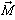
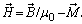
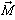
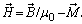
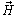
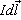
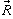
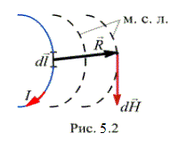
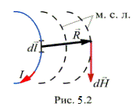

5.1.2.3. Напряжённость магнитного поля
Напряжённость магнитного поля  – векторная величина, равная геометрической разности магнитной индукции , делённой на магнитную постоянную µ0, и намагниченности  вещества, т.е.  Векторы и необязательно совпадают друг с другом по направлению. Несовпадение может быть в анизотропных (в магнитном отношении) материалах, у которых величина µ зависит от направления вектора . Большинство практических расчётов производят в предположении совпадения векторов и .
– векторная величина, равная геометрической разности магнитной индукции , делённой на магнитную постоянную µ0, и намагниченности  вещества, т.е.  Векторы и необязательно совпадают друг с другом по направлению. Несовпадение может быть в анизотропных (в магнитном отношении) материалах, у которых величина µ зависит от направления вектора . Большинство практических расчётов производят в предположении совпадения векторов и .
Физический смысл вектора  определяется законом Био-Савара: элемент тока  создаёт в точке, находящейся на расстоянии  от элемента тока (рис. 5.2), магнитное поле с напряжённостью


Единица напряжённости магнитного поля
 (ампер на метр).
(ампер на метр).
Величина напряжённости магнитного поля Н не зависит от магнитных свойств среды. Однако вдоль контура интегрирования (при его совпадении с линией вектора напряжённости магнитного поля) на границе сред с различными магнитными проницаемостями напряжённость Н меняется скачком.
Связь напряжённости магнитного поля и намагниченности магнитного материала выражается через коэффициент пропорциональности, называемый магнитной восприимчивостью χ = /, зависимый не только от напряжённости магнитного поля, но и от рода материала и его состояния (температуры и т. д.).
Тогда вектор магнитной индукции
= (µ0 + χ).
Величина индукции В складывается из индукции поля, создаваемого намагничивающим током (µ0), и индукции поля, создаваемого магнитным материалом (µ0).
Зависимость от принято записывать в виде

где µ0 = 4π·10-7 Гн/м – магнитная постоянная, магнитная проницаемость пустоты; µa = µ0µ [Гн/м] – абсолютная магнитная проницаемость среды (вещества); µ = µa / µ0 – безразмерная относительная магнитная проницаемость вещества, показывающая, во сколько раз магнитная проницаемость среды (вещества) больше (меньше) магнитной проницаемости пустоты.
В зависимости от значения µ различают: диамагнетики с магнитной проницаемостью µ < 1 (например, серебро, медь висмут; они незначительно ослабляют магнитное поле), парамагнетики с µ > 1 (например, платина, алюминий, воздух; магнитное поле в них незначительно возрастает) и ферромагнетики с магнитной проницаемостью µ >> 1.